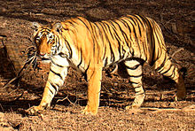
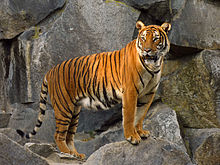
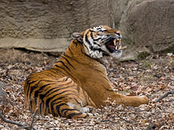

| Bengal Tiger |
 |
The Bengal tiger (Panthera tigris tigris) is the most numerous tiger subspecies. By 2011, the total population was estimated at fewer than 2,500 individuals with a decreasing trend. None of the 'Tiger Conservation Landscapes' within the Bengal tiger's range is considered large enough to support an effective population size of 250 adult individuals. Since 2010, it is listed as Endangered on the IUCN Red List.[1]
As of 2010, Bengal tiger populations in India have been estimated at 1,706–1,909.[2] As of 2014, they had reputedly increased to an estimated 2,226 individuals,[3] but the method used in the census may not be accurate.[4][5]
Bengal tigers number around 440 in Bangladesh and 163–253 in Nepal.[6][7][8] Prior censuses placed the population of tigers in Bhutan at around 65-75 individuals, however, the latest census estimated that 103 wild Bengal tigers are living in the country.[9]
Bengal is traditionally fixed as the typical locality for the binomen Panthera tigris, to which the British taxonomist Reginald Innes Pocock subordinated the Bengal tiger in 1929 under the trinomen Panthera tigris tigris.[10] The Bengal, Caspian and Siberian tigers, and lion rank among the biggest cats.[11][12][13] |
| Indochinese Tiger |
 |
The Indochinese tiger (Panthera tigris corbetti) (known as Hổ Đông Dương in Vietnam and เสือโคร่งอินโดจีน in Thailand) is a tiger subspecies dispersed throughout the Indochina region of Southeastern Asia. There is restricted access to border areas where this subspecies lives, so there is very little accurate information regarding its population status.[2]
The Indochinese tiger population was formerly estimated at 202-352 total individuals in the wild, and had almost approached the threshold for Critically Endangered.[1] However, the total population of Indochinese tigers has been estimated at 600-650 individuals in the wild since 2015.[3] Thailand has the largest population of tigers in Southeast Asia, formerly estimated at 200, the maintains a population of 189 to 252 individuals.[4] There are 85 individuals in Myanmar[1] and only 20 Indochinese tigers remaining in Vietnam.[5] The tiger has gone extinct from Cambodia,[6] southwest China and possibly Laos.
The tigers in peninsular Malaysia, formerly classified as Indochinese, have recently been reclassified as a separate subspecies, the Malayan tiger Panthera tigris jacksoni.[7][8] |
| Malayan Tiger |
 |
The Malayan tiger (Panthera tigris jacksoni) is a tiger subspecies that inhabits the southern and central parts of the Malay Peninsula and has been classified as Critically Endangered by IUCN in 2015 as the population was roughly estimated at 250 to 340 adult individuals in 2013; this population likely comprises less than 250 mature breeding individuals, with a declining trend.[1]
When in 1968 Panthera tigris corbetti was newly designated, the tigers inhabiting the Malayan Peninsula were included into this subspecies.[2] In 2004, Panthera tigris jacksoni was recognised as a new subspecies when a genetic analysis found that they are distinct in mtDNA and micro-satellite sequences from Panthera tigris corbetti.[3]
In Malay language the tiger is called harimau, also abbreviated to rimau.[4] |